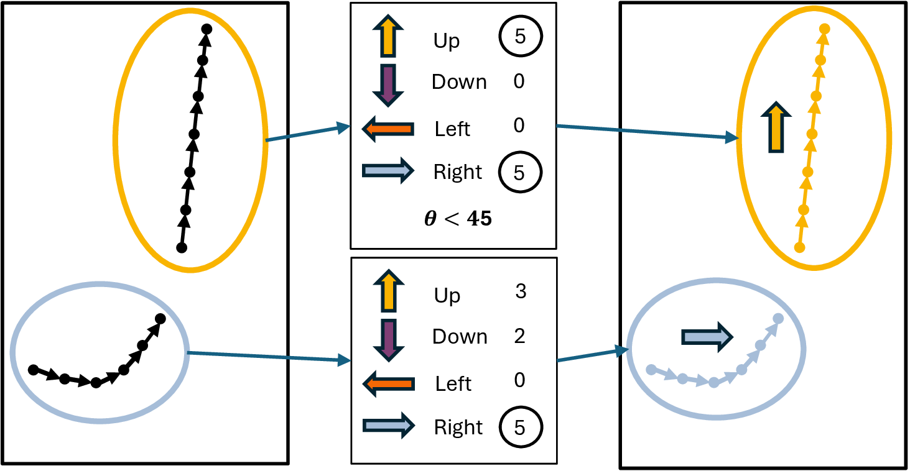
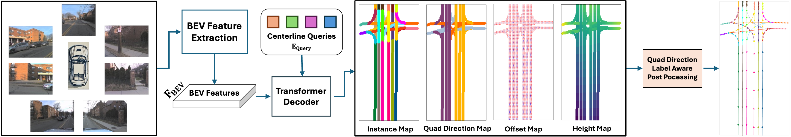
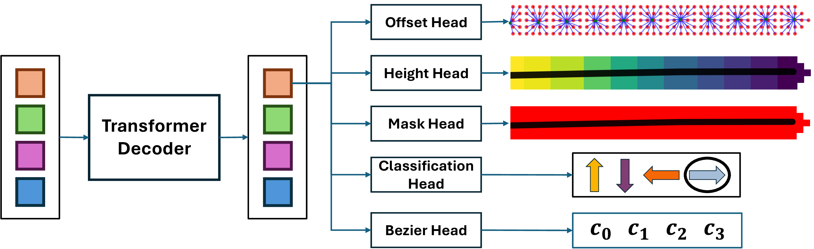
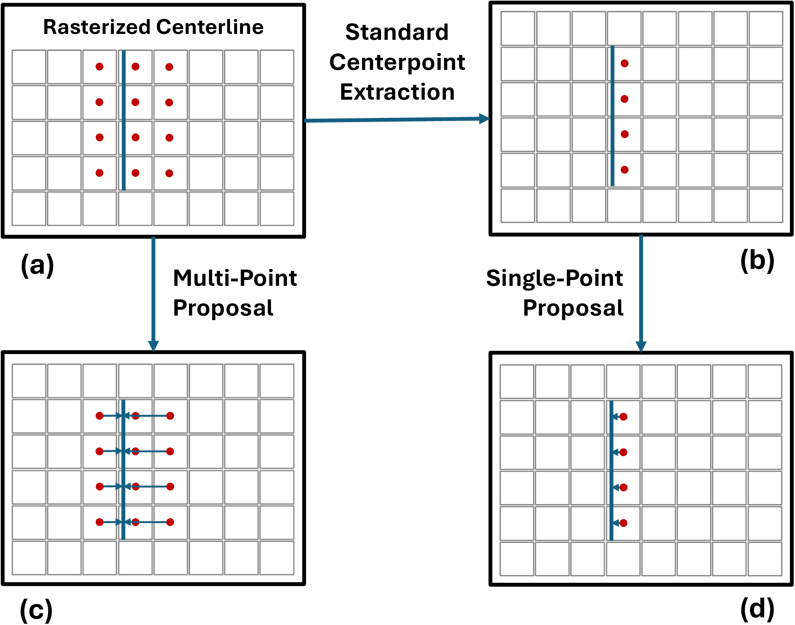

3D Mask Head with Dense Offset and Height Predictions for Road Topology Understanding
Road topology understanding requires reasoning over directed connectivity, not only detecting map elements. Mask-based pipelines provide a complementary alternative to parametric/query-only formulations, but prior versions were limited by raster discretization artifacts and weak 3D prediction.
TopoMaskV3 makes the mask pathway a standalone 3D predictor by introducing two dense heads: a dense offset field for sub-grid centerline correction and a dense height map for direct z estimation. Beyond architecture, the study introduces a stronger evaluation protocol with geographically disjoint splits to reduce overlap-driven memorization and a long-range (+/-100 m) benchmark to test robustness at extended distance.
Under this rigorous setting, TopoMaskV3 (Fusion) achieves state-of-the-art results on the disjoint Near split, reaching 28.5 OLSl. The findings emphasize both the effectiveness of a standalone mask-based 3D design and the necessity of benchmark protocols that measure true generalization.
TopoMaskV3 releases benchmark resources for geographically disjoint splits and long-range (+/-100 m) evaluation through the OpenLane-V2 fork.
openlanev2_sA_test_anno.zip, openlanev2_sA_anno_100.zip, openlanev2_sA_pkl_files.zipTopoMaskV3 extends the mask paradigm with dense offset and dense height heads, enabling robust end-to-end 3D centerline prediction from the mask path.
The study adapts geographically disjoint split methodology to road topology evaluation, reducing overlap-driven memorization and measuring true structural generalization.
Evaluation scope is extended from +/-50 m to +/-100 m, providing a stricter test of robustness for long-horizon topology reasoning and early planning decisions.
Comprehensive analysis of output fusion (Mask vs Bezier) and sensor fusion (Camera vs LiDAR) shows both are crucial for robust long-range generalization.
TopoMaskV3 builds on the quad-direction label representation introduced in TopoMaskV2. Each centerline instance is assigned one dominant direction class (up/down/left/right), so the mask output carries an explicit flow cue before vector reconstruction.
In the reconstruction stage, this label controls direction-aware extraction and ordered point generation, which reduces ambiguous trajectories in intersections and complex road layouts. TopoMaskV3 keeps this flow-aware design and couples it with dense offset and dense height predictions for stronger 3D centerline quality.

TopoMaskV3 follows an instance-query transformer design on BEV features built from multi-camera RGB inputs. Each sparse query represents one candidate centerline instance and predicts the attributes needed for direct mask-to-3D reconstruction.
Perspective-view camera features are projected into a unified BEV representation, which provides a common spatial canvas for topology prediction.
For each query, the decoder predicts quad-direction class, mask probabilities, dense 2D offsets, and dense height values to encode flow and geometry jointly.
Predicted fields are converted into refined points and then reconstructed into ordered 3D centerlines using direction-aware extraction and curve regularization.

Figure 3 details the decoder heads and how they are used at output level. The primary path is the standalone mask-based route (classification + mask + offset + height), while the Bézier head is optional and mainly used for BDA variants or output fusion experiments.

TopoMaskV3 makes the mask pathway a standalone 3D predictor by learning two dense geometric fields: a 2D offset field for sub-grid centerline correction and a height map for direct z estimation.
Both mechanisms use closest-point supervision to connect raster pixels with continuous 3D centerlines, then feed a direction-aware reconstruction pipeline for smooth and ordered outputs.

A dense 2D offset vector is predicted per BEV cell. This corrects discretization error from raster masks and recovers sub-grid centerline geometry before curve fitting.
A dense height map predicts normalized z for the same BEV support region. Sampling height together with refined (x, y) points directly yields 3D centerline candidates.
Offset and height are complementary: one improves lateral localization, the other restores vertical structure. Their combination provides the strongest gains in the ablations below.
We first isolate the contribution of the dense offset and dense height heads. The ablation shows that both components are individually helpful and jointly strongest, confirming their complementary roles in lateral correction and 3D lifting.
| Configuration | DETl | DETl_ch | TOPll | OLSl |
|---|---|---|---|---|
| No Prediction | 31.1 | 31.7 | 22.5 | 36.8 |
| Only Offset | 32.5 | 33.1 | 23.8 | 38.2 |
| Only Height | 32.6 | 37.2 | 23.4 | 39.4 |
| Offset + Height | 33.1 | 37.9 | 25.0 | 40.3 |
The combined setting gives the best result and improves over no prediction by +2.0 DETl, +6.2 DETl_ch, +2.5 TOPll, and +3.5 OLSl.
Under the geographically disjoint Near split, TopoMaskV3 (Fusion) reaches state-of-the-art OLSl while also improving topology-related metrics over prior methods.
| Method | DETl | DETl_ch | TOPll | OLSl |
|---|---|---|---|---|
| TopoNet | 18.9 | 23.5 | 12.7 | 26.0 |
| TopoMLP | 15.6 | 22.4 | 14.5 | 25.3 |
| TopoLogic | 16.9 | 22.7 | 15.5 | 26.3 |
| TopoMaskV2 (M) | 16.4 | 20.1 | 10.9 | 23.2 |
| TopoMaskV2 (F) | 18.5 | 23.8 | 11.7 | 25.5 |
| TopoBDA | 20.8 | 24.9 | 13.0 | 27.3 |
| TopoMaskV3 (M) | 19.3 | 25.6 | 13.6 | 27.3 |
| TopoMaskV3 (F) | 20.5 | 26.2 | 15.1 | 28.5 |
Best values are in bold and second-best are underlined. TopoMaskV3 (Fusion) achieves the best OLSl (28.5) on the disjoint Near split.
We further analyze output-level fusion (Mask/Bezier/Fusion) and sensor setup (camera-only vs camera+LiDAR) across split conditions and range settings (+/-50 m and +/-100 m).
| Output | Original Split (Overlap) | Near Split (Disjoint) | ||||||
|---|---|---|---|---|---|---|---|---|
| Camera | Camera + LiDAR | Camera | Camera + LiDAR | |||||
| ±50 m | ±100 m | ±50 m | ±100 m | ±50 m | ±100 m | ±50 m | ±100 m | |
| Bezier | 43.5 | 32.5 | 51.6 | 50.0 | 27.8 | 16.5 | 32.0 | 24.2 |
| Mask | 40.8 | 31.0 | 47.7 | 46.9 | 26.4 | 16.7 | 31.0 | 23.7 |
| Fusion | 42.5 | 32.9 | 50.0 | 48.6 | 27.9 | 17.4 | 32.0 | 24.5 |
Best values are in bold and second-best are underlined. Fusion and camera+LiDAR generally provide the most stable performance, especially under extended range and disjoint evaluation.
TopoMaskV3 matures the mask-based road-topology paradigm into a practical standalone 3D predictor by introducing dense offset and dense height prediction heads for sub-grid localization and direct elevation estimation.
@article{kalfaoglu_topomaskv2_2024,
title={TopoMaskV2: Enhanced Instance-Mask-Based Formulation for the Road Topology Problem},
journal={arXiv preprint arXiv:2409.11325},
author={Kalfaoglu, Muhammet Esat and Ozturk, Halil Ibrahim and Kilinc, Ozsel and Temizel, Alptekin},
year={2024}
}